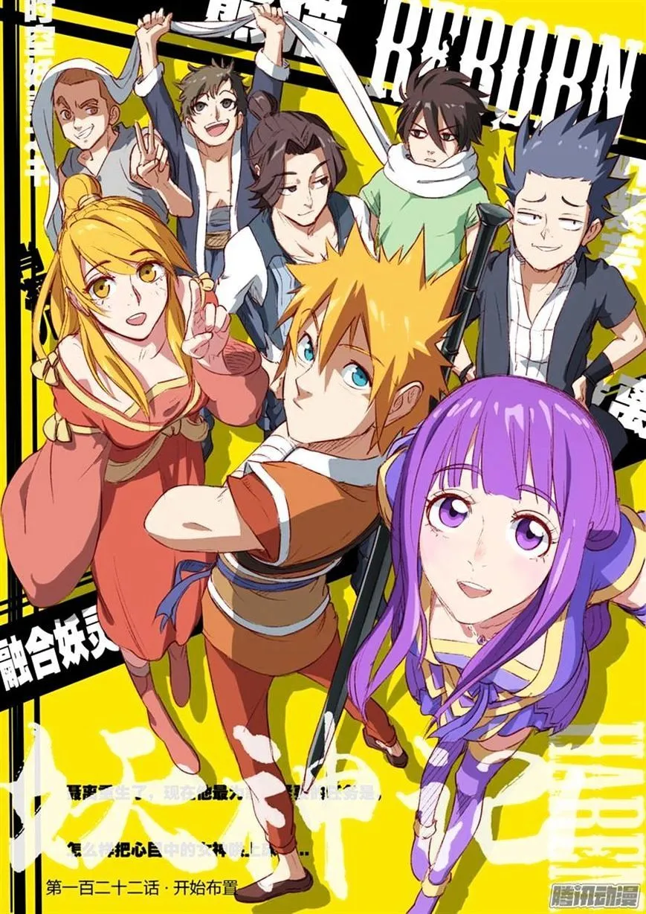

Tales of demon gods

Géneros: Acción, Aventura, Comedia, Artes Marciales, Fantasía, Romance, Harem.
Idioma: Español.
Sinopsis:
Nie Li , el más fuerte demonio espiritual, en su vida pasada estuvo en la cima del mundo marcial sin embargo, perdió la vida durante la batalla con Sage Emperador, y fue devuelto al pasado cuando tenia 13 años. Aunque él es el más débil de su clase con la ayuda de los vastos conocimientos que acumuló de su vida anterior, se transformara en un guerrero temible.
Lista de capítulos
Volumen 1
Renacido
Capitulo 1: RenacidoIgnorante
Capitulo 2: IgnoranteCastigado al estar de pie
Capitulo 3: Castigado al estar de pie¿Millión de monedas espirituales?
Capitulo 4: ¿Millión de monedas espirituales?Alquimista
Capitulo 5: AlquimistaXiao Ning Er
Capitulo 6: Xiao Ning ErTécnica Daoyin
Capitulo 7: Técnica DaoyinEl corazón de una chica
Capitulo 8: El corazón de una chicaDesayuno de la diosa al crepúsculo del amanecer
Capitulo 9: Desayuno de la diosa al crepúsculo del amanecer